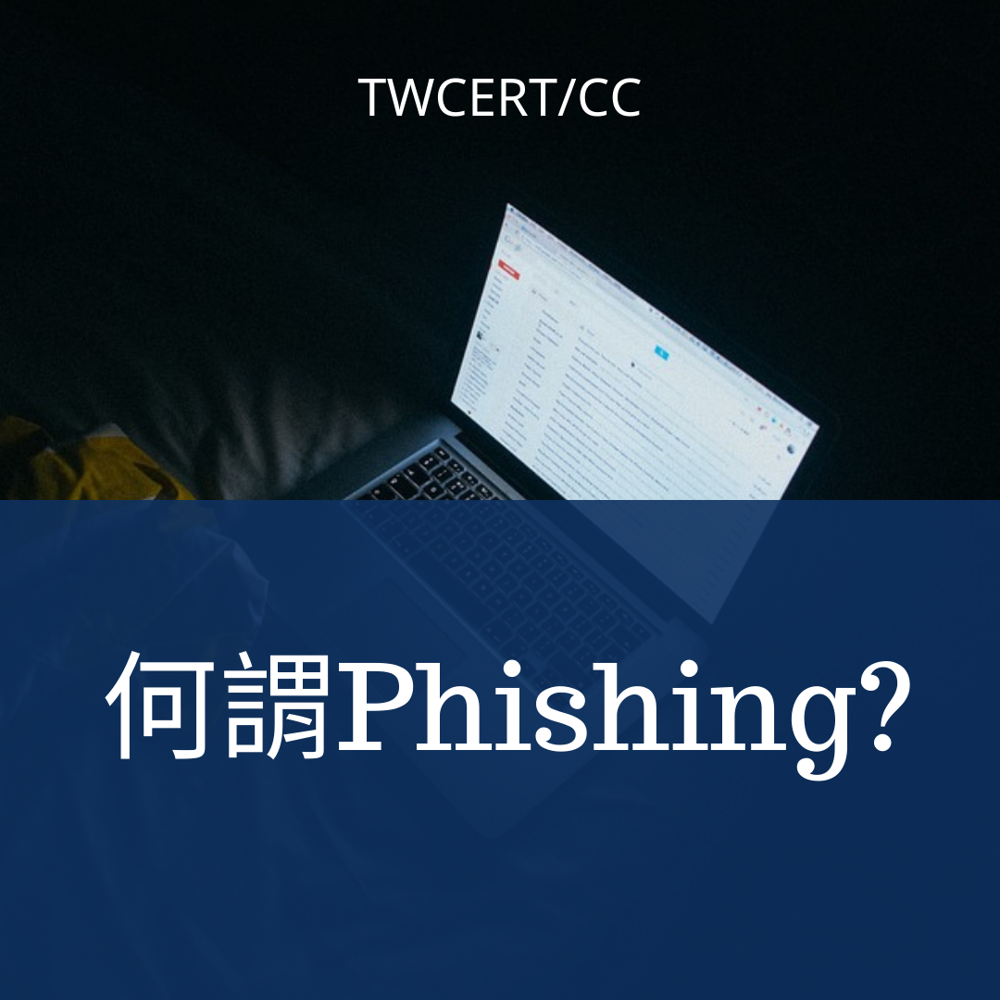
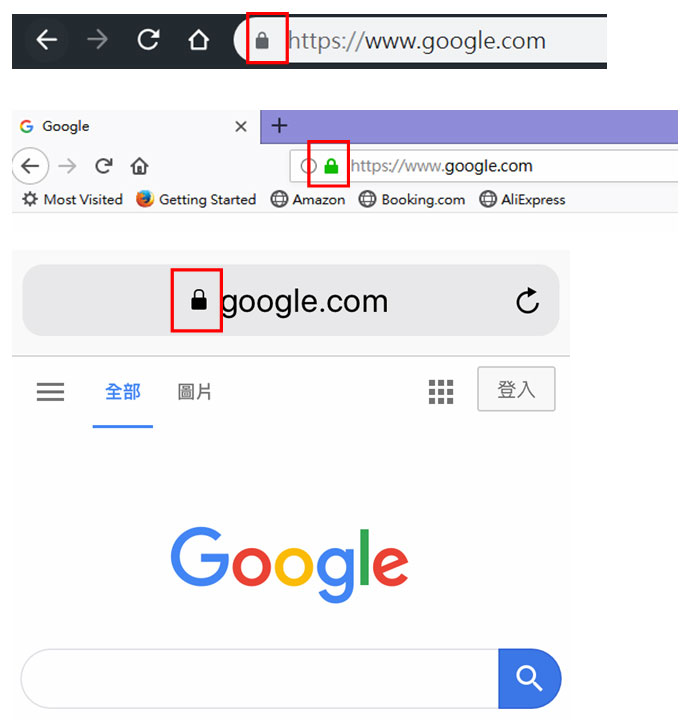
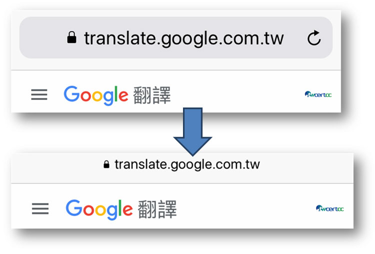
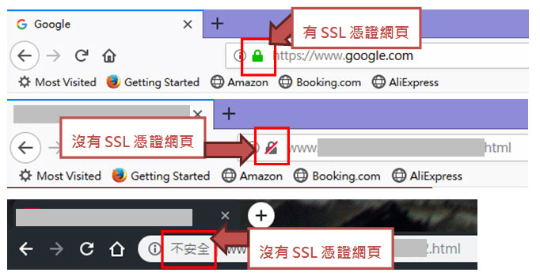

資料來源: TWCERT/CC - Posted on 2019-05-13

Phishing，又稱為網路釣魚，是一種有心人士透過偽裝、假冒真實的網頁，騙取受害者信任，進而達到獲取受害者個人資料、帳號密碼甚至信用卡資訊等行為。受害者可能會收到熟識的友人寄來的email或網址，讓使用者點選email或該網站，並且在受害者進入釣魚網站之後，要求使用者輸入個人的帳號密碼等資訊，就這樣將自己的資訊給了有心人士。
針對網路釣魚，又分為幾種技術—
- 假冒網址：針對釣魚網站的網址幾個字元進行修改(1與l、0與O、m與rn…)，讓網址看起來容易被誤認為原本的網址，但其實已非使用者所欲前往之網站。例如google.com，有心人士可將其改為www.go0gle.com或www.g00gle.com，乍看之下似乎為正常網站，但實際上卻已落入假網站之陷阱中。
- 網頁偽造：釣魚網站的排版、圖案、標示，與原本使用者所欲前往之網站極為相似或相同。因此，使用者若不小心連到假冒的釣魚網站，輸入登入之帳號密碼或個人資料，就會讓有心人士收集到受害者的個人資料。
- 電話網釣：雖然稱作『網路釣魚』，但並非所有攻擊手法均需透過電腦完成。有心人士也可能透過電話致電到受害者家中或手機，表示自己是某家公司或銀行等受害者曾使用過的網站，並且告知受害者其帳戶有問題，要求受害者輸入或告知相關資訊。甚至有些電話網釣在撥通後，就會要求使用者鍵入自己之相關資訊，導致其個人資料和敏感資料之洩漏。而這些電話網釣，有些已不似過往會顯示『不明來電』等隱蔽的電話系統，現已有使用假冒的相關資訊，降低受害者的戒心，進而達到更佳的詐騙率。
- WiFi免費熱點網釣：在人人都有智慧型手機的時代，到了咖啡廳、活動場地、甚至捷運等大眾運輸工具時，都會有免費的WiFi提供一般民眾連線。此時就會有駭客，開啟名稱相似相似/相同的熱點，例如台北常見的Taipei Free免費公共熱點，有心人士可能會於鄰近台北市的地區、將熱點名稱改為TPE-Free，讓曾經使用該熱點的使用者，毫無戒心地使用了TPE-Free熱點。而此時，當受害者連入該假冒熱點，後續所瀏覽的網頁、填入的資訊、自己的帳號密碼、甚至信用卡資訊等重要資料的傳輸，若沒有經過https的加密，就會經由該熱點傳入網際網路，因此，有心人士只要攔截下使用者寄出之封包，便能查看裡面所有訊息，並且用於其他用途中。
HINT：
釣魚網站可以想做一家黑心公司，想要讓客人去到錯的店家、花費更多的錢去買類似的商品。
因此 (1)店家有可能將路上的路標進行更改，例如將鼎泰豐的名字改為頂太風，並且放置顯眼的路標，讓一般人信以為真並且前往了假冒的頂太風 (連結操控)。
(2)並且在受害者進入店家之後，其裝潢和網路上查到的照片相差無幾，除了價格的差別之外，菜單內容也和其他人士提供的一樣，因此受害者就會輕信這一家是真的鼎泰豐。並且店家可能將價格比真正店家提高之外，還可能要求受害者進行申辦會員卡或餐與優惠活動等，取得受害者資料、好進行後續的詐騙(網頁偽造)。
(3)確認會員資料過後，該假冒店家會在受害者用餐後幾天，致電給消費者，除了進行一般制式化的消費者滿意度調查以確保消費者下次的到訪外，還可能謊稱當初使用者刷的信用卡有問題，請使用者提供相關資料。而真的有前往該假冒店家用餐的使用者往往不疑有他，就將私人相關資訊給了店家，而該店家便可以透過這些資訊做盜用、偽造、甚至轉賣個人資訊等用途賺上一筆 (電話網釣)。
(4)除此之外，該假冒店家可以告知消費者店裡有促銷活動，邀請消費者再次前往該店家用餐，並且在消費者前來之後，紀錄下消費者和友人的對話，便可以取得受害者談話中提到的個人訊息，例如交友狀況、生日、學歷、公司等資訊，甚至可以透過店家的誘導話術，取得更加隱密的其餘資訊，讓店家可以以此延伸詐騙該受害者相關人士，甚至販賣給其餘對個資有興趣之有心人士 (WiFi免費熱點網釣)。
釣魚網站
在數種網路釣魚手法中，最為常見的非「網頁偽造」莫屬。亦即透過上述的技術，先製作出一假冒的相似網址，網站內不論是其色彩、放入之圖片、相關可使用之功能均與真正的網站相差無幾。甚至有些釣魚網站僅偽造首頁/登入頁，當受害者於假冒的首頁/登入頁鍵入私人資訊並登入後，釣魚網頁會將使用者導入真正的網頁，導致使用者因後續均使用真正網頁進行相關運作，因此對於被詐騙的事實毫無察覺。
當駭客架設釣魚網站後，接著可透過Email、通訊軟體、社群媒體等方式進行散播，通知所有目標受害者宣傳釣魚網頁、誘使受害者點擊進入釣魚網站並登錄相關之個人資訊。此時，不僅僅因為受害者鍵入了自己的私人資料而導致個資的外洩，同時極有可能當受害者點擊了該網站，就使得電腦進行了惡意軟體的自動下載，使得電腦因此感染了惡意病毒等威脅。
對於一般人而言，釣魚網站的最簡單辨識方式可能是網址列上的鎖頭，有鎖頭代表著該網站的連線過程是有進行加密的，但是不代表這個網站是安全的。根據Phishlab於2018/12月的統計指出，大約有49%的釣魚網站一樣是有使用https進行加密。因此使用者也可以將滑鼠移到鎖頭上檢視，若該網站使用的憑證為公開且安全的，瀏覽器會告知使用者該網站的憑證是公開且安全的憑證，若顯示為不安全的憑證就有可能是釣魚網站，建議可經由google搜尋後進入該網站之官網，較容易避免進入釣魚網站。網站的安全性。

除此之外，有些有心人士本身還會自行偽造看似正常的網址列圖片，放置在網頁的頂端。即便該網站是假冒的釣魚網站，如此一來，其不僅是擁有看起來正常的鎖頭，該網站更是擁有一切正常的網址顯示。尤其是透過手機瀏覽網頁的使用者，由於手機本身有自動隱藏網址列的特性，因此對於有心人士而言，要偽造出一個讓使用者看的假網址列是非常簡單且不易被發現的事情。對於一般使用者看來，就跟正常網站並無二致，導致使用者將自己的個人資訊洩漏給釣魚網站。

小心防範釣魚網站
由於網路的發展逐漸往「簡單」、「方便」的方向發展，為了減少使用者的麻煩，網際網路上的協定和設計越來越簡潔，導致越來越容易產生的詐騙釣魚漏洞。但對於一般使用者而言，信任於網際網路給予的便利性，反而會疏於防範可能的危險，尤其是這些以假亂真的釣魚網站。因此，一般使用者須注意以下幾點，以防範落入釣魚網站的陷阱中。
- 注意網域名稱：對一般使用者而言，最先能夠、也最需要注意的便是網址列上列出的網域名稱(網址)。雖然有心人士常常會用讓人容易產生混淆的網址，讓使用者在不注意的情況下落入陷阱，例如www.twcert.org.tw轉為www.twecrt.org.tw或www.tw-cert.org.tw等極為相近的網址。建議可以將常用的網站存成我的最愛，或是自己於網址列中輸入常用網址，都可以減少遇上釣魚網站的風險。
- 不亂點擊來路不明的連結：一般使用者，在收到標題看起來聳動、吸引人，甚至看起來相識的人所寄之電子郵件或訊息時，都會因好奇心而點擊訊息中的網址連結。然而，這些通常標明「特價」、「贈品」、「公務聯繫」等訊息，多半都是利用人們的好奇心，引誘人點擊之後，蒐集個人資料之外，更有可能會讓電腦感染上惡意程式。由於email的寄件者是非常容易偽造的，因此看似正常的公務email訊息，也有可能是駭客假冒的釣魚信件，例如收到了tw-cert@cert.org.tw的訊息，或許看起來正常，但tw-cert@cert.org.tw不代表真的是由cert的人所發出的郵件，也曾經發生過有心人士透過假冒供應商的email寄信給公司業務承辦人員，要求承辦人員進行付款等作業並提供匯款帳戶作業。而處理該事件的承辦人未仔細進行比對，因而將應付款項匯款置假帳戶中，直到合作廠商前來請款，承辦人才發現遭受有心人士詐騙。
- 仔細觀察網站：
對於常用的網站，一般使用者就算沒有真的仔細觀察過，多少也會對該網站有所記憶。因此進入一網站時，可以先觀察該網站的狀況，查看是否有圖片或是字體等，和原本的網站是不同的，留心是否進入了釣魚網站，提高警覺。
- 檢閱網站的安全鎖頭：
檢閱網址列上的網址旁是否有鎖頭。若沒有鎖頭、甚至出現了『不安全』字樣時，使用者就必須要特別注意，是否有可能落入釣魚網站。然而，正如前述所說，即便該網站有鎖頭，也不代表能夠完全信任該網站，因為鎖頭僅代表該網站有使用HTTPS，而目前約有一半左右的釣魚網站同樣有使用HTTPS，即便獲得了SSL憑證，也必須要小心進入了錯誤的釣魚網頁。

- 安裝防毒軟體、定期更新系統：
除了以上的防範方式之外，本中心也建議使用者在電腦中安裝可信的防毒軟體或防火牆，許多防毒軟體同時都有內建惡意網頁、釣魚網頁的黑名單，當使用者連線到釣魚網頁時，防毒軟體會在瀏覽器上提出警告，同時，由於電腦系統的更新通常都是用以提升電腦的功能和防護力，因此建議定期更新電腦或手機系統，以取得最新、較為安全的作業系統，以免上了釣魚網站的當，讓電腦感染了惡意病毒，影響電腦正常的運作。
- 定期更新瀏覽器：
現在主要的瀏覽器都有提供黑名單的功能，當使用者連線到有人通報的釣魚網站或惡意網頁時，都會再次提示使用者所連線之網頁為有問題之網頁，並再次確認是否要進行連線。